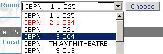
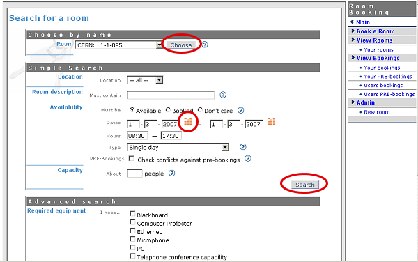
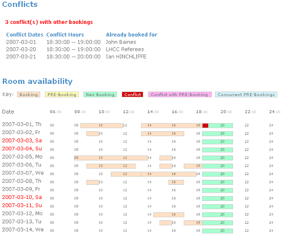

| Prev | Chapter 7. Conference Room Booking | Next |
You may want to read Core Features listing to grasp an idea of room booking module capabilities. To summarize, it is for booking conference rooms.

To use Indico::CRBS directly, just click 'Room Booking' on Indico home page. To book rooms for your event, go to the event management page and click 'Room Booking' tab. In both cases you will be asked to sign in. Use your Indico credentials.
Room Booking Module first page depends on who is logged in. For most people, it will show list of their bookings. 'Your bookings' menu option will give you the same list. Room managers will see bookings of rooms they manage, so they can quickly see what's going on. If you are room manager, use 'Users bookings' menu option to show this page again. (This menu option is not visible for ordinary users).
Feeling lost? Point at question mark icon  with your mouse to see context help. Context help is meant to answer most of your questions along the way. It is always there waiting for you.
with your mouse to see context help. Context help is meant to answer most of your questions along the way. It is always there waiting for you.
If room does not have a name, the default one is built according to the following pattern:
"location: building-floor-room"
Examples: "CERN: 304-1-001", "Sheraton: 0-34-013".

There are three kinds of rooms. They determine how much freedom users have.
Public rooms, which do not require confirmation (black/green color). This means all bookings are considered accepted.
Public rooms, which do require confirmation (orange color). You can PRE-book them and wait for acceptance or rejection.
Private rooms: cannot be booked at all (red color). Only room manager can book his/her private room. If you need such room, you should ask this person to insert a booking for you.

There are six types of bookings. They allow you to define different types of recurring reservations. Common example is weekly meeting (which takes place the same time every week). You can choose from:
'Single day' : not recurring, one time event
'Repeat daily' : use if you want to book many subsequent days, like the whole week
'Repeat once a week' : the booking will take place every week, always the same day
'Repeat once every two weeks' : like above, but repeats every two weeks
'Repeat once every three weeks' : like above, but repeats every three weeks
'Repeat every month' : allows you to do bookings like 'first Friday of each month', 'second Wednesday of each month', 'fourth Saturday of each month', etc.
Basically there are two steps: selecting a room and filling a booking form. More detailed steps are:

On main Indico page, click 'Room Booking' main menu option. This is your entrance to Room Booking Module.
Click 'Book a Room' menu option.
If you know which room you want, simply select it and click [Choose]. You will be taken directly to the booking form.
If you don't know, take advantage of room searching. Specify dates (click orange calendar icon to choose day with a mouse). Specify hours and booking type (single day or repeating). Specify also other criteria the room must meet, like capacity and necessary equipment. Then click [Search] button (there are two for convenience, both will do the same).
You will be presented a list of available rooms meeting your criteria.
Click 'book' link on for the room of your choice.

Fill a booking form. If you have searched for rooms, most fields are already filled for your convenience. These data come from searching form. After filling the form, click [Re-check for conflicts] button.
Scroll page down to have a look on conflicts. Scroll more to see room availability calendar. Your booking is represented by green bar... or dark red bar if it overlaps on existing bookings, which are pink, by the way. This graphical room preview is useful mainly when you do a recurring booking. Give it a try: set when/type attribute to 'Repeat once a week', set end date to be at least 2 months after start date, and click [Re-check for conflicts] again. See room calendar in it's full glory.
If your booking conflicts with others, you have two options:
In general, you will prefer to resolve conflicts manually - by changing dates, hours or maybe trying another room.
The alternative is to automatically book everything except conflicting days. This may be useful if you do long-term, repeating booking, for example 'whole year, every week'. Imagine everything looks perfect, except for several weeks when room is not available. In this case check the 'skip conflicting dates' option to book everything except problematic dates.
Click [Book] button.
If your form is OK, system will ensure your new booking does not conflict with others. When no conflicts are found, you will be shown confirmation page which enlists details of your booking.
Click 'Your bookings' from menu. Your new booking now appears on the list.

Note: some rooms require confirmation. These rooms often appear in orange color. In this case, you cannot directly book them. You can only 'PRE-book' such room. PRE-booking works exactly the same way as booking. The only difference is that you must wait for acceptance from room manager.
Note: you can always modify your booking (or PRE-booking). It will be again checked for conflicts.
Note: you can always browse your own bookings and PRE-bookings using menu options 'Your bookings' and 'Your PRE-bookings'.